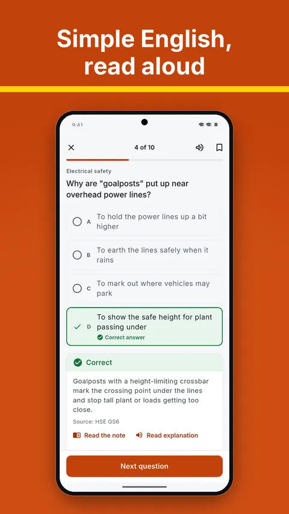

Not a government app. HiVis is an independent study app made by Kodfu Bilisim. It is not affiliated with or endorsed by CITB, CSCS, Pearson VUE or HSE, and it does not contain the real test questions.
Free practice › General safety
Fire: free HS&E test practice questions
The fire triangle, extinguisher types, hot work controls and fire emergencies on site.
6 original questions from the HiVis app for the CITB HS&E Operatives test, each with the answer and an explanation. No sign-up, nothing saved. These are not the real test questions: no app or website can show you those.
Question 1 · Choose one answer
What are the three sides of the fire triangle?
- Heat, smoke and fuel
- Heat, fuel and oxygen
- Fuel, oxygen and water
- Sparks, wind and fuel
Show the answer
Answer B: Heat, fuel and oxygen
A fire needs heat, fuel and oxygen. Taking away any one of the three puts the fire out.
Source: Basic fire science
Question 2 · Choose one answer
What does a Class B fire involve?
- Burning solids such as wood or paper
- Flammable liquids such as petrol or paint
- Flammable gases such as LPG, propane or acetylene
- Burning cooking oils and fats
Show the answer
Answer B: Flammable liquids such as petrol or paint
Class B fires involve flammable liquids, such as petrol, diesel, solvents and paint. Solids are Class A, gases Class C and cooking oils Class F.
Source: BS EN 2 classification of fires
Question 3 · Choose one answer
What is the main purpose of a hot work permit?
- To record who owns the welding equipment on site
- To make sure fire precautions are agreed and checked
- To allow hot work anywhere on site without more checks
- To show the welder has paid for the gas they used
Show the answer
Answer B: To make sure fire precautions are agreed and checked
A permit makes someone check and agree the precautions before work starts, and makes sure checks continue after it finishes.
Source: HSE and Joint Code of Practice guidance on hot work permits
Question 4 · Choose one answer
You are working on the third floor when the fire alarm sounds. Your expensive tools are in the far corner of the room.
What should you do?
- Leave by the nearest escape route to the assembly point
- Collect your tools first, then leave as quickly as you can
- Use the goods hoist to get down to the ground faster
- Wait a few minutes to see whether it is only a test
Show the answer
Answer A: Leave by the nearest escape route to the assembly point
Leave straight away by the nearest escape route and report at the assembly point. Belongings can be replaced; delays and hoists put lives at risk.
Source: Regulatory Reform (Fire Safety) Order 2005
Question 5 · Choose one answer
Why should a dry powder extinguisher not be used in a small enclosed space?
- The powder cloud blocks vision and breathing
- Powder makes every fire burn much hotter
- It only works on very large outdoor fires
- The powder conducts electricity to the user
Show the answer
Answer A: The powder cloud blocks vision and breathing
Dry powder works on many fires, but in a small room it creates a thick cloud that cuts visibility and can make breathing difficult, so escape becomes harder. Choose another suitable type there.
Source: Fire extinguisher selection guidance (BS 5306-8)
Question 6 · Choose one answer
Your hot work permit for grinding says a suitable extinguisher must be at the work area. There is none nearby.
What should you do?
- Get one before you start grinding
- Start, and fetch one if a fire begins
- Grind quickly so there are fewer sparks
- Keep a bucket of sand near you instead
Show the answer
Answer A: Get one before you start grinding
A small fire caught in the first seconds can be put out; minutes spent fetching an extinguisher can let it spread. Every condition on the permit must be in place before hot work begins.
Source: Joint Code of Practice on fire prevention
You’ve seen 6 of 21 questions in this topic
The HiVis app has all 21, each with an explanation. Across the whole Operatives there are 389 questions in 19 topics, plus timed 50-question mock tests of 45 minutes.
All 21 are free in the app. HiVis Pro is £5.99 one-off: every question and every mock test for all test levels. No subscription.
Android now; iPhone version not yet available.
Revision notes
The fire triangle
A fire needs three things: heat, fuel and oxygen. Take any one away and the fire goes out. On a construction site, fuel includes timber, packaging, waste, paint, solvents, fuel and gas cylinders. Heat comes from hot work such as welding, cutting and grinding, from electrical faults and from discarded cigarettes. Oxygen is in the air around us, and leaking oxygen cylinders make things burn far more fiercely.
Extinguisher types
Fire extinguishers in the UK have red bodies with a coloured band or label. Water (red) is for burning solids such as wood and paper. Foam (cream) covers solids and flammable liquids. Carbon dioxide (black) suits electrical equipment and flammable liquids. Dry powder (blue) works on many fire types but cuts visibility and should not be used in small enclosed spaces. Wet chemical (yellow) is for cooking oil fires. Never use water on electrical or burning liquid fires.
Classes of fire
Fires are grouped by what is burning. Class A is solid materials such as wood, paper and fabric. Class B is flammable liquids such as petrol, diesel, paint and solvents. Class C is flammable gases such as LPG and acetylene. Class D is burning metals. Class F is cooking oils and fats. Electrical fires are not a class of their own: the electrical supply should be isolated if it is safe to do so.
Hot work
Welding, cutting, grinding, brazing and torch-on roofing are hot work and a common cause of site fires. They are usually controlled by a hot work permit, which sets out the precautions: clear or cover combustible materials, protect gaps where sparks can fall, keep a suitable extinguisher at hand, and carry out a fire check for a set time after the work stops, because materials can smoulder unseen for a long time.
Storing gas cylinders and flammable liquids
LPG is heavier than air and sinks into drains, basements and trenches, where it can build up and explode. Store cylinders upright, outdoors, in a secure, ventilated compound away from drains and with the valves closed. Keep oxygen cylinders apart from fuel gases. Oxy-fuel equipment must have flashback arrestors. Keep flammable liquids in closed, labelled containers and only bring the amount you need for the day to the workplace.
Housekeeping prevents fires
Waste and packaging are fuel. Clear them away regularly, put them in the skips provided and never let rubbish build up under stairs, inside buildings or against temporary cabins. Only smoke or vape in the designated areas and put cigarette ends out properly. Keep fire doors shut and escape routes and fire points clear so people can get out and reach the equipment quickly.
When the alarm sounds
If you discover a fire, raise the alarm straight away using a call point or the site's method. When the alarm sounds, stop work, make your equipment safe if you can do it quickly, and leave by the nearest escape route. Do not stop to collect belongings or use a hoist. Go to the assembly point and report for the roll call. Only tackle a small fire if you are trained and it is safe.
More topics
- Previous: Safety signsSign shapes and colours, what each type means and common site signals.
- Next: Electrical safetySite voltages, RCDs, checking tools and leads, power lines and electric shock.
- HS&E test guideFormat, pass mark, booking, ID and how to prepare
Practise every test in the HiVis app
841 original questions for the Operatives, Supervisory, Managers and Professionals and specialist HS&E tests, full timed mock tests of 50 questions in 45 minutes, simple explanations with read aloud, a study plan and spaced review. It works offline, with no ads and no account.



Free: three topics in full, three questions in every other topic, one full mock test for each test, the Card Finder and Site words.
HiVis Pro, £5.99 one-off: every question and every mock test for all test levels. No subscription.
Android now; iPhone version not yet available. HiVis helps you prepare; it cannot promise a pass.